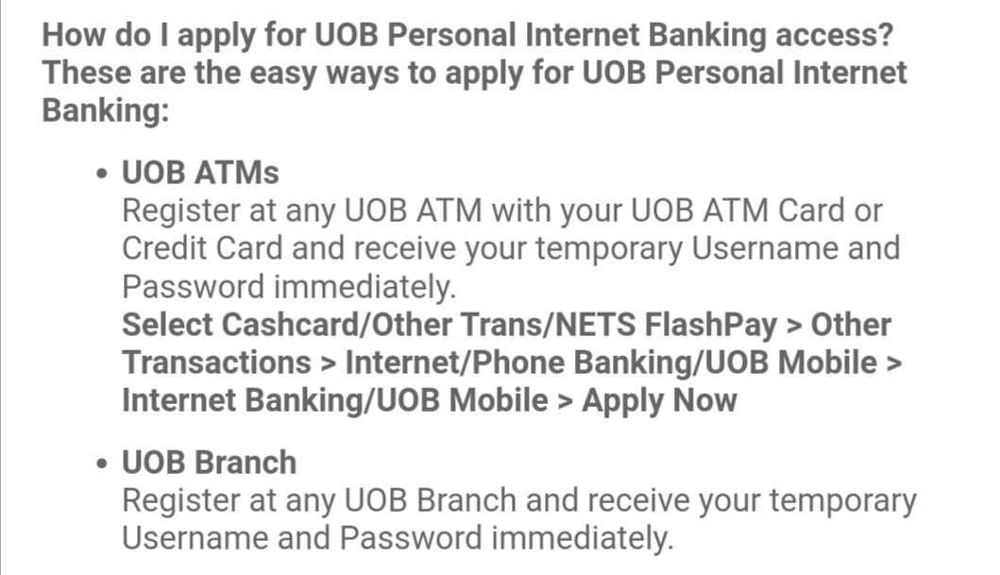
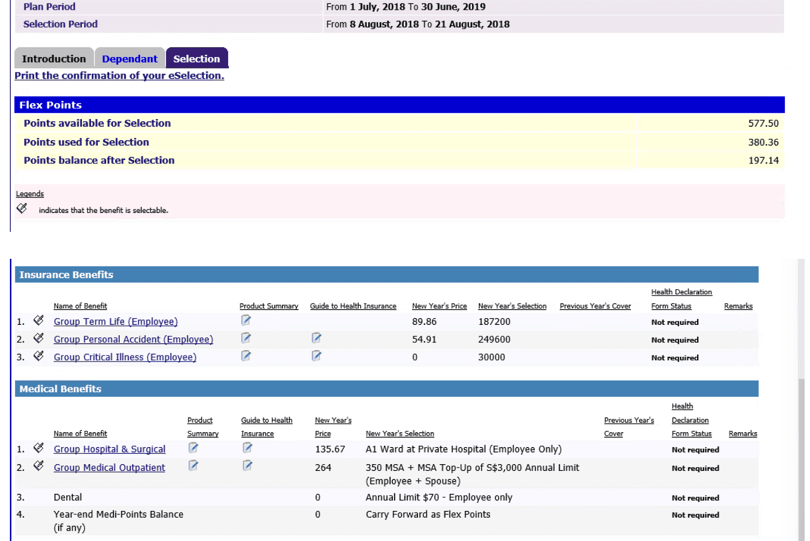
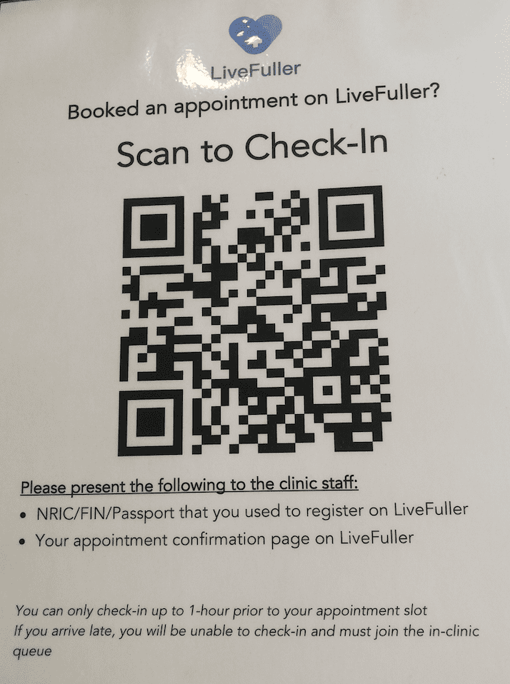

留新个人经济管理
文章目录
银行卡
银行账户和储蓄卡
学校会要求提供一个银行账号用于财务结算，如果第一月没有办理银行账户，工资会以支票的形式发放。学校里有OCBC(Oversea-Chinese Banking Corporation)和DBS的取款机，分别在North Spine和South Spine。OCBC在North Spine有个银行柜台，DBS的柜台在JP (Jurong Point Shopping Centre)。不过办理银行账户，需要新加坡身份证、住址证明等材料。住址证明就是写有你具体住址的官网文件，比如水电费单、手机账单等。学校一般不会帮大家开住址证明，而大家刚到新加坡，也没有自己的房子，没有水、电费单。如果没有办理手机业务，也没有手机账单，如果购买了Postpaid Card会有账单。
一个可行的方式就是租房住址证明，可以问房东帮忙办理(貌似要在网站上登记一下，交点钱。不过貌似只适用于组屋)，或找楼管开学生宿舍证明。如果以上方式都不可行的话，还可以通过交租房印花税(Stamp Duty)获得，具体见下文。在入职的时候，NTU人力资源部的工作人员会问你更新住址，给你打印一份印有MoM的证明，请参考留新准备: 入职报到。带着要求的文件到银行柜台开户就可以了，同时会有一张储蓄卡。
信用卡
如果有需要，还可以申请各大银行的信用卡，比如OCBC、DBS、UOB等。信用卡可以坐公共交通，食堂刷卡吃饭，商场消费等，据说UOB的One Card不错。
申请UOB的信用卡以后，需要开通的网银的话，请参考一下方式： 
本人在新支付方式
我在新加坡有两张银行卡，DBS的储蓄卡和UOB的One Card信用卡，储蓄卡绑定在我的DBS银行账户名下，UOB信用卡无绑定银行账号。DBS储蓄卡具有VISA、NETS、NETS@FlashPay、PLUS、EZ-Link、PayWave等功能，将这张银行卡绑定一下SimplyGo手机应用，并且到地铁站的充值机，将支付模式从CEPAS改成BANK模式，就可以用来坐公交和地铁了。DBS的手机银行APP叫PayLah，平时用手机在各个食堂直接付款消费。UOB的One Card信用卡具有VISA和NETS功能，但是要使用NETS功能，需要开通UOB的账户，所以NETS功能，我实际上并不能使用。One Card可以直接用来坐公交和地铁，无需修改支付模式。此外，还可以从我的DBS账户往staff card里充值，用staff card消费。
-
Staff Card
- 门禁 (目前主要用途)
- 食堂吃饭、麦当劳、学校超市购物
- 公共交通
-
DBS储蓄卡
- 取现 (目前主要用途)
- 食堂吃饭、麦当劳、学校超市购物
- 公共交通
- 网上支付、商场付费 (VISA)
-
DBS Paylahs手机应用
- 食堂吃饭、学校超市购物
-
One Card
- 公共交通
- 个别食堂吃饭(信用卡VISA支付)、麦当劳、学校超市购物
- 网上支付、商场付费 (VISA)
FlexBen@NTU
NTU为faculty、staff和student提供了医疗保险，有关student的医保请参考留新个人生活信息汇总 -> NTU学生保险。
Faculty和staff的医疗保险服务是FlexBen@NTU，我们可以选择购买哪些项目，多退少补，剩余的医保钱学校会在学年末(7月)退到工资卡里，请见下图选择示例。如果不做选择，学校会默认我们选择了最基本的医保。之后我们会收到AVIVA卡，用于看病。在选择FlexBen时候，还可以为家属选择部分医保。详情请查阅FlexBen@NTU -> click the yellow figure。
使用Mac登录FlexBen@NTU好像有问题，可以用Windows、Linux、以及手机登录，选择医疗保险。
FlexBen选择示例: 
如果想买额外的保险，可以咨询新加坡的几家保险公司:
校医院就诊流程
看病时，带上自己的校园卡、Aviva卡和身份证。诊所(clinic)和医院(hospital)的信息可以查询Health Care、微信小程序新加坡诊所。这里以到Fullerton Healthcare@NTU为例，阐述基本的流程。Fullerton Healthcare@NTU 位于University Health Services Building。
- 医院窗口：Fullerton Healthcare@NTU前台有
registration、dental、dispensary三个窗口。 - 就诊流程(每个人可能稍有区别)
- 取号：到registration处，在取号机上输入手机号取号后，等待被叫号。如果是第一次去，首先会被叫号去registration柜台出示自己的身份证或者护照，进行注册登记。
- 就医：取号后等待被医生叫号看病。快到号时，会收到短信提醒。被医生叫号后，进入指定的Room就医。
- 检查：如果医生判断需要做进一步检查，比如Xray、验血等，医生会开个单子，让你去做检查。开好检查单后，可能会被叫号去
dispensary付钱和取药，再去检查。检查好以后，如果报告需要等很久才出，可以离开诊所，之后有问题，医生会电话联系你再去看。这里以验血为例子，讲讲检查的流程。- 首先到验血室，交给护士小姐姐验血单
- 护士小姐姐会让你出示自己的Aviva卡、身份证或者护照，验明身份
- 小姐姐会拿着你的单子和证件到电脑旁进行检查，让你在诊室外等待
- 过一会儿，你去拿回证件和单子，去
blood test处排队抽血，如果没有人在你前面，直接敲门进去，喊小姐姐帮你抽血就行了。
- 现在可以通过手机在线在校医院预约医生，省略了取号和排队等待就医的时间。之前去医院取完号，等待就医的时间可能要半天。
-
手机下载
LiveFuller应用程序，并注册账号，需要身份证号和手机号。 -
选择
General Consultation，预约就医时间。 -
就医时，请携带好注册使用的证件以及LiveFuller里的预约确认页。 
-
个人税务
在新加坡工作，需要自己每年主动报税。NTU的员工有No-Filing Service (NFS)，Inland Revenue Authority of Singapore (IRAS) 会自动计算税单并通知我们，我们自己需要预览并确认这个账单是否正确。然后过一段时间正式账单会寄给我们，届时就可以交钱了。在入职以后，我们可以提前办理SingPass账户，用于登录IRAS系统，查看、修改个人信息和账单等。
办理SingPass账号
-
可以直接在SingPass主页申请办理SingPass账号，填完各种申请信息后，过几天会收到含有密码的信件，收件地址默认会是我们身份证上的地址。请参考Instructional Guides。
注意事项： 我们的身份证地址可能只写着Nanyang Technological University，各种政府的信件(比如Singpass网上注册密码信件，IRAS税单等)不一定能及时寄到我们的具体办公室地址，信件找不到收件人时会被标记为
GONE AWAY，退回给寄信人，寄信人再查询收件人的具体地址后重寄。兜兜转转好几天，也许还会寄不到。一个可能的解决方法是自己去更新一下，请参考Immigration & Checkpoints Authority (移民与关卡局)相关指导信息Change of Residential Address for Identity Card。由于我们并不是换地址，而是更新地址，所以不知道办理部门是否需要证明文件。 -
我们也可以去柜台办理SingPass账号，带上身份证分分钟就办好了，离NTU最近的柜台在Gek Poh Ville Community Club，其他柜台信息请查询Counter Locations。
-
更多信息请查看SingPass FAQ。
查询IRAS官网
登录IRAS，点击Login -> Login to myTax Portal -> Personal Tax，通过SingPass账号登录IRAS系统。可以查看和修改个人信息、税单等。可以通过Account -> Update Contact Details修改Mailing Address、Email Address、手机号等。IRAS的信件会邮寄到更新后的地址，如果没有更新的话，会寄到身份证上的地址，出现上面提到的问题。
报税和缴税
NTU员工只需要确认IRAS帮我们计算的税单是否正确就可以了，不需要自己计算报税。确认之后过一段时间，会收到正式的账单和具体缴税方式。可以选择直接银行转账、GIRO等方式。
印花税
- 官网说明
- 参考
Learning the Basics->e-Stamping and Where to e-Stamp Documents，找到哪里可以叫印花所。如果想在Service Bureaus付钱，需要提前填写申请表E3AA. - 参考
Working Out Your Stamp Duty->Renting a Property，计算需要交多少费用。 - 参考
Paying Your Stamp Duty->How to Pay Stamp Duty，了解如何印花税以及e-Stampting的费用。对于Service Bureaus这种方式，我不太清楚如何自己完成data entry of the details in your requisition form, 否则相比于partial service，需要多支付S$20。 - 请参考租房合同模板。选择
Service Bureaus时，并不需要合同。
编辑历史
- 2019-07-12： 初稿
文章作者 core-man
上次更新 2020-05-22